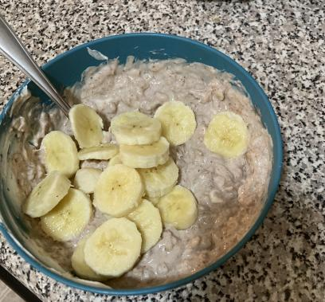

Protein Oats with Oat Milk

Oats are an easy and healthy food to make for the fitness enthusiast. Eat oats, make gains!
Ingredients
- 1 cup of old fashioned oats
- 1 big scoop of peanut butter
- 1 cup of oat milk
- 1 banana
- salt
Directions
- Measure out 1 cup of oats and 1 cup of oat milk. Pour both into a small non-stick pot. Add a dash of salt, then boil
for 5 minutes or until the oats have absorbed all the oat milk.
- Pour cooked oats into a bowl. Grab a regular old spoon and scoop out a big glob of peanut butter and add it to the oats.
Stir it in nice and good until it's consistent throughout.
- Cut up a banana with a butter knife and add to the oats.
Eat up and get those gains bro!